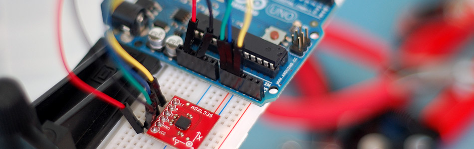

Sensing Orientation With The ADXL335 + Arduino

I know, I know, this one has such a simple name. Where's the pun? Honestly, the description was just to long to include one. Maybe it could have been "What's Up? Sensing Orientation With The ADXL335 + Arduino" - Ehhh... Probably not.
A few weeks ago we wrote a tutorial about using the ADXL345 to sense taps, and drops, but this week we are going to wind it back, go back to basics, and show you how to take an analog 3-axis accelerometer and use it to sense simple orientation with it, specifically the ADXL335, but this can be applied to any analog 3-axis accelerometer.
Before we really dive into it, we need a general understanding of how accelerometers work, so if you already know why each axis can only differentiate 180deg of movement, you can skip this. Wraning: Over-simplification ahead. In the last article I described an accelerometer as a device that sensed movement. Today, think of them as devices that sense gravity.
{kind=link}
Basic Understanding Of Accelerometers
Accelerometers measure acceleration, often caused by motion. But when they are standing still, the only acceleration the accelerometer senses is due to gravity pulling down on it.
Imagine a box that has little springs sticking straight out from the sides of the box, and that the accelerometer measures how hard gravity is stretching out those springs. The springs on the side are all bending the same amount, the spring on the bottom is all stretched out, and the one at the top is not stretched at all (because the spring is pull back into itself), so the accelerometer sees it as feeling no gravity, or 0g (gravity). If you rotate the box 90º and follow the spring on the top. It is now on the side and is hanging down some and the sensor sees it now feels .5g. Rotate 90º again, and it is at the bottom, stretched out, and it feels 1g. Rotate again 90º and we are at the side again, with it feeling .5g, and 90º rotation again, we are back at the top and it feels 0g. So we made a full rotation and the accelerometer saw this: 0g-> .5g -> 1g -> .5g -> 0g.
{kind=link}
If you look at this, it means that the accelerometer can really only sense differences in 180º of movement as the other 180deg is just a mirror image. So how can we sense 360 deg of movement?
The trick to this is that while one axis can only sense a 180deg difference, so can the another axis, but they sense it differently. If you look at the chart to the right, you can see the sensed values while rotating round the X Axis. (The x never changes because it is always facing the same direction) - So we can combine the y, and z values to find x using a trigonometry function called Atan2 who then gives us values back as -180º to 180º (but in radians, so it is -π to π and well have to convent it).
No Love For Yaw
Yaw is name for rotation around an axis that is similar to spinning a top, or shaking your head "no." Accelerometers can't measure this type of motion. Why? Well think about the box. If you turn the box in this manner, non of the sides change their orientation to the ground. If you need to measure yaw, you will need to incorporate a gyro or digital compass into your project, but it gets tricky, and is beyond the scope of this article.
Why So Shaky?
The accelerometer is really going to report a proper measurement when it is standing still. if it is shaken, moved, bumped, or in free fall, the acceleration the accelerometer measures is no longer purely gravity based, and you are going to see that in your readings.
But I Need A Cleaner Reading
If you need a clean reading during movement, you need something this article won't provide, and that is a gyro and an accelerometer working in combination. Together they form something called an IMU - Inertial measurement unit. Correctly setup, and gyro is able to kick in where an accelerometer leave off, and vise versa. A gyro is great at measuring rotation, but has no understanding of orientation. And an accelerometer is good at determining orientation, but has no ability to keep track during rotation.
Hooking It Up
Connecting the ADXL335 to your Arduino is a snap. It powers off of the 3.3v, and the x,y,z connectors just connect to the 0,1,2 analog input pins. This accelerometer is a very simple and just outputs an analog voltage depending on the sensed value.
Code For The ADXL335 Or Other Analog Accelerometer
So here is some code: This code simply calculates 0-360º values for X,Y & Z and prints it to the serial terminal. This code is not specific to the ADXL335, and with almost no tweaking you can make this work with any analog 3-axis accelerometer.
Our Arduino's analog input pins are comparing the analog voltage from the accelerometer's analog outputs to 5v, and assigning number to that. If the Arduino senses 0V it reports 0, and 5V it reports 1023 ( you read more in the ADC Article in our wiki). The highest value I read from the sensor when it was standing still was 402, so that is 1g, and the lowest was 265, so that is 0g. If you get funny output from the code, you will need to change this depending on the highest and lowest values you get from your accelerometer. (Ask us the discussion forum for help if you need it.) Just changing these values will make the code work for any other analog 3 axis accelerometer, not just the ADXL335.
Because 265 (0g) was sensed at 0º, and 402 (1g) was sensed at 180º we are going to convert those values accordingly. But atan2, likes using -90 to 90 better, so we will do that instead. Lastly we convert the atan2 radian output to degrees, and voila, we have 360º measurements!
////////////////////////////////////////////////////////////////// //©2011 bildr //Released under the MIT License - Please reuse change and share //Simple code for the ADXL335, prints calculated orientation via serial ////////////////////////////////////////////////////////////////// //Analog read pins const int xPin = 0; const int yPin = 1; const int zPin = 2; //The minimum and maximum values that came from //the accelerometer while standing still //You very well may need to change these int minVal = 265; int maxVal = 402; //to hold the caculated values double x; double y; double z; void setup(){ Serial.begin(9600); } void loop(){ //read the analog values from the accelerometer int xRead = analogRead(xPin); int yRead = analogRead(yPin); int zRead = analogRead(zPin); //convert read values to degrees -90 to 90 - Needed for atan2 int xAng = map(xRead, minVal, maxVal, -90, 90); int yAng = map(yRead, minVal, maxVal, -90, 90); int zAng = map(zRead, minVal, maxVal, -90, 90); //Caculate 360deg values like so: atan2(-yAng, -zAng) //atan2 outputs the value of -π to π (radians) //We are then converting the radians to degrees x = RAD_TO_DEG * (atan2(-yAng, -zAng) + PI); y = RAD_TO_DEG * (atan2(-xAng, -zAng) + PI); z = RAD_TO_DEG * (atan2(-yAng, -xAng) + PI); //Output the caculations Serial.print("x: "); Serial.print(x); Serial.print(" | y: "); Serial.print(y); Serial.print(" | z: "); Serial.println(z); delay(100);//just here to slow down the serial output - Easier to read }
Extending This
Even with the limitations of the ADXL335, you can do some great things. This is one time that I think just hooking a RGB LED to your Arduino with this makes a great device. Just kinda fun to play with, mixing colors as you turn it, so if you must use LEDs with this, I'm ok with that.
This can really come in handy when you want to control anything based on orientation. So, get your tools ready, and build a reclining chair that knows when you reclined, and turns on the TV for you, OR... use it to master your posture as you balance a book on your head while recording the values.
Just a note: I had issues with connecting this with a servo. The servo was taking too much power from the Arduino, and the it was really throwing off the analog readings. So just note that. I did read that the servo needed a decoupling capacitor to work well, but I have not tried it.
Article taken from bildr.org with minor changes - I am the original author of this content